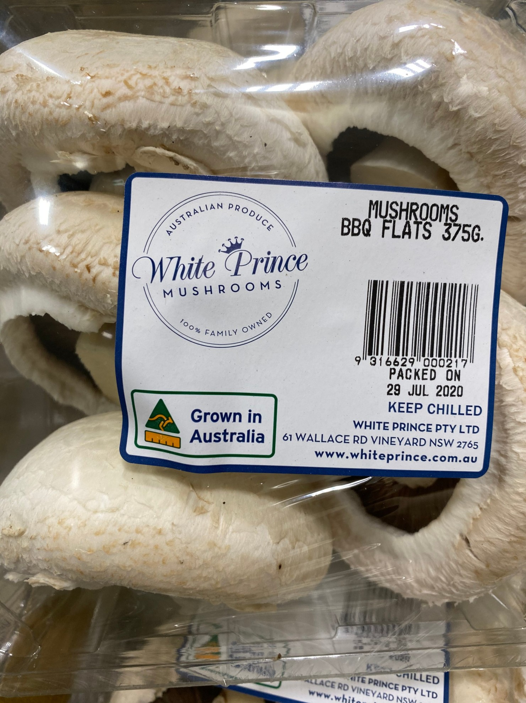

These large flat mushrooms are popular for stuffing and baking in the oven. They can grow to be the size of an adult's palm. Flat mushrooms are larger in size than most mushrooms, with flatter tops. They range in size from 4-6 cm, perhaps bigger. They have completely broken veils and dark brown gills. The larger the mushroom, the more flavour it will develop. The flat mushroom has a delicious meaty texture. Store in a paper bag in the crisper section of the refrigerator for up to five days. Do not store in plastic or the mushrooms may become slimy.
